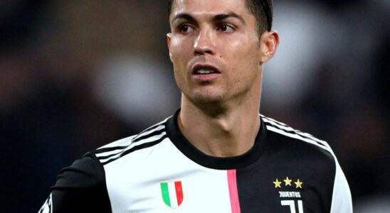

|  |
|---|
|
Cristiano Ronaldo dos Santos Aveiro, ismertebb nevén Cristiano Ronaldo (Funchal, 1985. február 5. –) Európa-bajnok portugál labdarúgó, szélső, a Manchester United játékosa,valamint a portugál válogatott csapatkapitánya. A Real Madrid 2009 nyarán 80 millió fontért (94 millió euró) szerződtette, így ekkor a világ legdrágább játékosának számított. Első felnőtt csapata a Sporting volt, ahol a nagy csapatba 2001-ben került fel. Itt mindössze egy szezont töltött, ezután leigazolta a Manchester United, mintegy 12 millió fontért. A „vörös ördögöknél” egészen 2009-ig játszott. Az itt töltött hat év alatt háromszoros bajnok, egyszeres kupa- és kétszeres ligakupa-győztes lett. Ezen kívül megnyerte a Bajnokok Ligáját, az angol szuperkupát és a FIFA-klubvilágbajnokságot is, továbbá a csapat játékosaként Aranylabdás is lett, ezzel ezt a címet 40 év után nyerte meg ismét Manchester-játékos. A 2007–08-as szezonban klubrekordnak számító, 42 gólt szerzett az idény során, ezzel megdöntötte George Best 33 gólos rekordját, ami 40 éve állt fenn. Ronaldo ugyanebben az évben az európai aranycipőt is megszerezte, nyolc ponttal előzte meg Dani Güizát. 2009 nyarán a Real Madridhoz szerződött rekordnak számító 94 millió euróért. A 2010-11-es szezonban 40 gólt szerzett, megdöntve Telmo Zarra és Hugo Sánchez 38 gólos rekordját. Ezt a rekordot egy évvel később Lionel Messi 50-re javította. Ronaldo személyes csúcsát ugyanebben a szezonban 46-ra, 2015-ben 48-ra javította. Ő szerezte a Real történetének legtöbb gólját (61) is egy idényen belül. A korábbi rekordot Puskás Ferenc tartotta 49-cel. 2018 nyarától három szezonon át az olasz rekordbajnok Juventus játékosa volt, a torinóiakkal két bajnoki címet és egy Olasz Kupát nyert, a 2020–2021-es idényben pedig ő lett az olasz élvonal gólkirálya 29 találattal. 2021 nyarán visszatért a Manchester Unitedhez. A válogatottban 2003 óta szerepel, 2010-től a csapatkapitányi posztot tölti be. Európa-bajnok 2016-ban, Nemzetek Ligája-győztes 2019-ben, továbbá 2006-ban negyedik helyen végzett a csapattal a világbajnokságon. Ő a válogatott szereplési-és gólrekordere is. Európai játékosok közül ő szerezte a legtöbb gólt válogatott mérkőzéseken. Cristiano Ronaldo dos Santos Aveiro 1985. február 5-én született Funchal városában, Madeira szigetén, Maria Dolores dos Santos Aveiro és José Dinis Aveiro legkisebb gyermekeként. (Cristiano és Ronaldo a keresztnevei, anyja leánykori családi neve dos Santos, apja családi neve Aveiro.) Egy bátyja van, akit Hugónak hívnak, valamint két nővére, Elma és Liliana Cátia. A Ronaldo nevet, második keresztnevét a néhai amerikai elnök, Ronald Reagan után adta Dolores a fiának, ugyanis ő volt a kedvenc színésze, míg a Cristianót nővérétől kapta. |